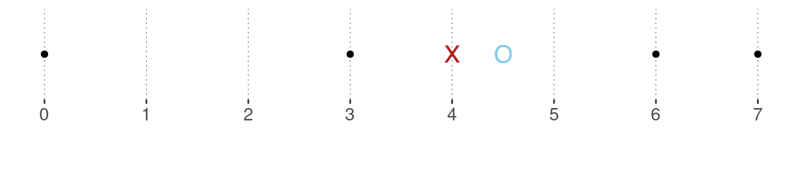

Mean: \(\frac{1+2+4+10}{4}=\frac{17}{4}=4.25\)
Median: \(\frac{2+4}{2}=3\)
Mode: all values are equally frequent, so there is no (unique) mode.
5.2 Central tendency and dispersion
This section will look at two types of summary statistics: measures of central tendency and measures of dispersion.
Measures of central tendency map a vector of observations onto a single number that represents, roughly put, “the center”. Since what counts as a “center” is ambiguous, there are several measures of central tendencies. Different measures of central tendencies can be more or less adequate for one purpose or another. The type of variable (nominal, ordinal or metric, for instance) will also influence the choice of measure. We will visit three prominent measures of central tendency here: (arithmetic) mean, median and mode.
Measures of dispersion indicate how much the observations are spread out around, let’s say, “a center”. We will visit three prominent measures of dispersion: the variance, the standard deviation and quantiles.
To illustrate these ideas, consider the case of a numeric vector of observations. Central tendency and dispersion together describe a (numeric) vector by giving indicative information about the point around which the observations spread, and how far away from that middle point they tend to lie. Fictitious examples of observation vectors with higher or lower central tendency and higher or lower dispersion are given in Figure 5.2.

Figure 5.2: Fictitious data points with higher/lower central tendencies and higher/lower dispersion. NB: The points are ‘jittered’ along the vertical dimension for better visibility; only the horizontal dimension is relevant here.
5.2.1 The data for the remainder of the chapter

In the remainder of this chapter, we will use the avocado data set, a very simple and theory-free example in which we can explore two metric variables: the average price at which avocados were sold during specific intervals of time and the total amount of avocados sold.
We load the (pre-processed) data into a variable named avocado_data (see Appendix D.5 for more information on this data set):
We can then take a glimpse:
## Rows: 18,249
## Columns: 7
## $ Date <date> 2015-12-27, 2015-12-20, 2015-12-13, 2015-12-06, 201…
## $ average_price <dbl> 1.33, 1.35, 0.93, 1.08, 1.28, 1.26, 0.99, 0.98, 1.02…
## $ total_volume_sold <dbl> 64236.62, 54876.98, 118220.22, 78992.15, 51039.60, 5…
## $ small <dbl> 1036.74, 674.28, 794.70, 1132.00, 941.48, 1184.27, 1…
## $ medium <dbl> 54454.85, 44638.81, 109149.67, 71976.41, 43838.39, 4…
## $ large <dbl> 48.16, 58.33, 130.50, 72.58, 75.78, 43.61, 93.26, 80…
## $ type <chr> "conventional", "conventional", "conventional", "con…The columns that will interest us the most in this chapter are:
average_price- average price of a single avocadototal_volume_sold- total number of avocados soldtype- whether the price/amount is for a conventional or an organic avocado
In particular, we will look at summary statistics for average_price and total_volume_sold, either for the whole data set or independently for each type of avocado. Notice that both of these variables are numeric. They are vectors of numbers, each representing an observation.
5.2.2 Measures of central tendency
5.2.2.1 The (arithmetic) mean
If \(\vec{x} = \langle x_1, \dots , x_n \rangle\) is a vector of \(n\) observations with \(x_i \in \mathbb{R}\) for all \(1 \le i \le n\), the (arithmetic) mean of \(x\), written \(\mu_{\vec{x}}\), is defined as
\[\mu_{\vec{x}} = \frac{1}{n}\sum_{i=1}^n x_i\,.\]
The arithmetic mean can be understood intuitively as the center of gravity. If we place a marble on a wooden board for every \(x_i\), such that every marble is equally heavy and the differences between all data measurements are identical to the distances between the marbles, the arithmetic mean is where you can balance the board with the tip of your finger.
Example. The mean of the vector \(\vec{x} = \langle 0, 3, 6, 7\rangle\) is \(\mu_{\vec{x}} = \frac{0 + 3 + 6 + 7}{4} = \frac{16}{4} = 4\,.\) The black dots in the graph below show the data observations, and the red cross indicates the mean. Notice that the mean is clearly not the mid-point between the maximum and the minimum (which here would be 3.5).

To calculate the mean of a large vector, R has a built-in function mean, which we have in fact used frequently before. Let’s use it to calculate the mean of the variable average_price for different types of avocados:
## # A tibble: 2 × 2
## type mean_price
## <chr> <dbl>
## 1 conventional 1.16
## 2 organic 1.65Unsurprisingly, the overall mean of the observed prices is (numerically) higher for organic avocados than for conventional ones.

Excursion. It is also possible to conceptualize the arithmetic mean as the expected value when sampling from the observed data. This is useful for linking the mean of a data sample to the expected value of a random variable, a concept we will introduce in Chapter 7. Suppose you have gathered the data \(\vec{x} = \langle 0, 3, 6, 7\rangle\). What is the expected value that you think you will obtain if you sample from this data vector once? – Wait! What does that even mean? Expected value? Sampling once?
Suppose that some joker from around town invites you for a game. The game goes like this: The joker puts a ball in an urn, one for each data observation. The joker writes the observed value on the ball corresponding to that value. You pay the joker a certain amount of money to be allowed to draw one ball from the urn. The balls are indistinguishable and the process of drawing is entirely fair. You receive the number corresponding to the ball you drew paid out in silver coins. (For simplicity, we assume that all numbers are non-negative, but that is not crucial. If a negative number is drawn, you just have to pay the joker that amount.)
How many silver coins would you maximally pay to play one round? Well, of course, no more than four (unless you value gaming on top of silver)! This is because 4 is the expected value of drawing once. This, in turn, is because every ball has a chance of 0.25 of being drawn. So you can expect to earn 0 silver with a 25% chance, 3 with a 25% chance, 6 with a 25% chance and 7 with a 25% chance. In this sense, the mean is the expected value of sampling once from the observed data.5.2.2.2 The median
If \(\vec{x} = \langle x_1, \dots , x_n \rangle\) is a vector of \(n\) data observations from an at least ordinal measure and if \(\vec{x}\) is ordered such that for all \(1 \le i < n\) we have \(x_i \le x_{i+1}\), the median is the value \(x_i\) such that the number of data observations that are bigger or equal to \(x_i\) and the number of data observations that are smaller or equal to \(x_i\) are equal. Notice that this definition may yield no unique median. In that case, different alternative strategies are used, depending on the data type at hand (ordinal or metric). (See also the example below.) The median corresponds to the 50% quartile, a concept introduced below.
Example. The median of the vector \(\vec{x} = \langle 0, 3, 6, 7 \rangle\) does not exist by the definition given above. However, for metric measures, where distances between measurements are meaningful, it is customary to take the two values “closest to where the median should be” and average them. In the example at hand, this would be \(\frac{3 + 6}{2} = 4.5\). The plot below shows the data points in black, the mean as a red cross (as before) and the median as a blue circle.

The function median from base R computes the median of a vector. It also takes an ordered factor as an argument.
## [1] 4.5To please the avocados, let’s also calculate the median price of both types of avocados and compare these to the means we calculated earlier already:
avocado_data %>%
group_by(type) %>%
summarise(
mean_price = mean(average_price),
median_price = median(average_price)
)## # A tibble: 2 × 3
## type mean_price median_price
## <chr> <dbl> <dbl>
## 1 conventional 1.16 1.13
## 2 organic 1.65 1.635.2.2.3 The mode
The mode is the unique value that occurred most frequently in the data. If there is no unique value with that property, there is no mode. While the mean is only applicable to metric variables, and the median only to variables that are at least ordinal, the mode is only reasonable for variables that have a finite set of different possible observations (nominal or ordinal).
There is no built-in function in R to return the mode of a (suitable) vector, but it is easily retrieved by obtaining counts.
Exercise 5.1: Mean, median, mode
- Compute the mean, median and mode of data vector \(\vec{x} = \langle1,2,4,10\rangle\).
- Now add two numbers to the vector such that the median stays the same, but mode and mean change.
Numbers to add: \(1, 10 \to \vec{x} = \langle1,1,2,4,10,10\rangle\)
New mean: \(\frac{1+1+2+4+10+10}{6}=\frac{28}{6}\approx4.67\)
New mode: Both \(1\) and \(10\) are equally frequent and more frequent than all other numbers. Consequently, there is no (unique) mode.
- Decide for the following statements whether they are true or false:
- The mean is a measure of central tendency, which can be quite sensitive to even single outliers in the data.
- If \(\vec{x}\) is a vector of binary Boolean outcomes, we can retrieve the proportion of occurrences of TRUE in \(\vec{x}\) by the R function
mean(x).
Both statements are correct.
5.2.3 Measures of dispersion
Measures of dispersion indicate how much the observed data is spread out around a measure of central tendency. Intuitively put, they provide a measure for how diverse, variable, clustered, concentrated or smeared out the data observations are. In the following, we will cover three common notions: variance, standard deviation and quantiles.
5.2.3.1 Variance
The variance is a common and very useful measure of dispersion for metric data. The variance \(\text{Var}(\vec{x})\) of a vector of metric observations \(\vec{x}\) of length \(n\) is defined as the average of the squared distances from the mean:
\[\text{Var}(\vec{x}) = \frac{1}{n} \sum_{i=1}^n (x_i - \mu_{\vec{x}})^2\]
Example. The variance of the vector \(\vec{x} = \langle 0, 3, 6, 7 \rangle\) is computed as:
\[\text{Var}(\vec{x}) = \frac{1}{4} \ \left ( (0-4)^2 + (3-4)^2 + (6-4)^2 + (7-4)^2 \right ) = \] \[ \frac{1}{4} \ (16 + 1 + 4 + 9) = \frac{30}{4} = 7.5\]
Figure 5.3 shows a geometric interpretation of the variance for the running example of vector \(\vec{x} = \langle 0, 3, 6, 7 \rangle\).

Figure 5.3: Geometrical interpretation of variance. Four data points (orange dots) and their mean (red cross) are shown, together with the squares whose sides are the differences between the observed data points and the mean. The numbers in white give the area of each square, which is also indicated by the coloring of each rectangle.
We can calculate the variance in R explicitly:
## [1] 7.5There is also a built-in function var from base R. Using this we get a different result though:
## [1] 10This is because var computes the variance by a slightly different formula to obtain an unbiased estimator of the variance for the case that the mean is not known but also estimated from the data. The formula for the unbiased estimator that R uses, simply replaces the \(n\) in the denominator by \(n-1\):21
\[\text{Var}(\vec{x}) = \frac{1}{n-1} \sum_{i=1}^n (x_i - \mu_{\vec{x}})^2\]
5.2.3.2 Standard deviation
The standard deviation \(\text{SD}(\vec{x})\) of numeric vector \(\vec{x}\) is just the square root of the variance:
\[ \text{SD}(\vec{x}) = \sqrt{\text{Var}(\vec{x})} = \sqrt{\frac{1}{n} \sum_{i=1}^n (x_i - \mu_{\vec{x}})^2}\]
Let’s calculate the (unbiased) variance and standard deviation for the average_price of different types of avocados:
avocado_data %>%
group_by(type) %>%
summarize(
variance_price = var(average_price),
stddev_price = sd(average_price),
)## # A tibble: 2 × 3
## type variance_price stddev_price
## <chr> <dbl> <dbl>
## 1 conventional 0.0692 0.263
## 2 organic 0.132 0.3645.2.3.3 Quantiles
For a vector \(\vec{x}\) of at least ordinal measures, we can generalize the concept of a median to an arbitrary quantile. A \(k\)% quantile is the element \(x_i\) in \(\vec{x}\), such that \(k\)% of the data in \(\vec{x}\) lies below \(x_i\). If this definition does not yield a unique element for some \(k\)% threshold, similar methods to what we saw for the median are applied.
We can use the base R function quantile to obtain the 10%, 25%, 50% and 85% quantiles (just arbitrary picks) for the average_price in the avocado data set:
quantile(
# vector of observations
x = avocado_data$average_price,
# which quantiles
probs = c(0.1, 0.25, 0.5, 0.85)
)## 10% 25% 50% 85%
## 0.93 1.10 1.37 1.83This tells us, for instance, that only about ten percent of the data observations had prices lower than $0.93.
Exercise 5.2: Variance, standard deviation, quantiles
- Compute the unbiased variance and standard deviation of data vector \(\vec{y} = \langle4,2,6,8\rangle\).
\[ \begin{align} \mu_{\vec{y}} &= \frac{4+2+6+8}{4}=5 \\ Var(\vec{y}) &= \frac{1}{n-1}\sum_{i = 1}^n (y_i-\mu_{\vec{y}})^2 \\ &= \frac{1}{4-1}((4-5)^2+(2-5)^2+(6-5)^2+(8-5)^2) \\ &= \frac{1}{3}(1+9+1+9) = \frac{20}{3} \approx 6.67 \\ SD(\vec{y}) &= \sqrt{Var(\vec{y})} = \sqrt{6.67} \approx 2.58 \end{align} \]
- Decide for the following statements whether they are true or false:
- The median is the 50% quantile.
- A 10% quantile of 0.2 indicates that 10% of the data observations are above 0.2.
- The 85% quantile of a vector with unequal numbers always has a larger value than the 25% quantile.
Statements a. and c. are correct.
5.2.4 Excursion: Quantifying confidence with bootstrapping
Bootstrapping is an elegant way to obtain measures of confidence for summary statistics. These measures of confidence can be used for parameter inference, too. We will discuss parameter inference at length in Chapter 9. In this course, we will not use bootstrapping as an alternative approach to parameter inference. We will, however, follow a common practice (at least in some areas of Cognitive Psychology) to use bootstrapped 95% confidence intervals of the mean as part of descriptive statistics, i.e., in summaries and plots of the data.
The bootstrap is a method from a more general class of algorithms, namely so-called resampling methods. The general idea is, roughly put, that we treat the data at hand as the true representation of reality. We then imagine that we run an experiment on that (restricted, hypothetical) reality. We then ask ourselves: What would we estimate (e.g., as a mean) in any such hypothetical experiment? The more these hypothetical measures derived from hypothetical experiments based on a hypothetical reality differ, the less confident we are in the estimate. Sounds weird, but it’s mind-blowingly elegant.
An algorithm for constructing a 95% confidence interval of the mean of vector \(D\) of numeric data with length \(k\) looks as follows:
- take \(k\) samples from \(D\) with replacement, call this \(D^{\textrm{rep}}\)22
- calculate the mean \(\mu(D^{\textrm{rep}})\) of the newly sampled data
- repeat steps 1 and 2 to gather \(r\) means of different resamples of \(D\); call the result vector \(\mu_{\textrm{sampled}}\)
- the boundaries of the 95% inner quantile of \(\mu_{\textrm{sampled}}\) are the bootstrapped 95% confidence interval of the mean
The higher \(r\), i.e., the more samples we take, the better the estimate. The higher \(k\), i.e., the more observations we have to begin with, the less variable the means \(\mu(D^{\textrm{rep}})\) of the resampled data will usually be. Hence, usually, the higher \(k\), the smaller the bootstrapped 95% confidence interval of the mean.
Here is a convenience function that we will use throughout the book to produce bootstrapped 95% confidence intervals of the mean (the functions is also supplied directly as part of the aida package):
## takes a vector of numbers and returns bootstrapped 95% ConfInt
## of the mean, based on `n_resamples` re-samples (default: 1000)
bootstrapped_CI <- function(data_vector, n_resamples = 1000) {
resampled_means <- map_dbl(seq(n_resamples), function(i) {
mean(sample(x = data_vector,
size = length(data_vector),
replace = T)
)
}
)
tibble(
'lower' = quantile(resampled_means, 0.025),
'mean' = mean(data_vector),
'upper' = quantile(resampled_means, 0.975)
)
}Applying this method to the vector of average avocado prices, we get:
## # A tibble: 1 × 3
## lower mean upper
## <dbl> <dbl> <dbl>
## 1 1.40 1.41 1.41Notice that, since average_price has length 18249, i.e., we have \(k = 18249\) observations in the data, the bootstrapped 95% confidence interval is rather narrow. Compare this against a case of \(k = 300\), obtained by only looking at the first 300 entries in average_price:
# first 300 observations of `average price` only
smaller_data <- avocado_data$average_price[1:300]
bootstrapped_CI(smaller_data)## # A tibble: 1 × 3
## lower mean upper
## <dbl> <dbl> <dbl>
## 1 1.14 1.16 1.17The mean is different (because we are looking at earlier time points) but, importantly, the interval is larger because with only 300 observations, we have less confidence in the estimate.
Exercise 5.3: Bootstrapped Confidence Intervals
- Explain in your own words how the bootstrapping-algorithm works for obtaining 95% confidence intervals of the mean (2-3 sentences).
To get the 95% CI of the mean, we repeatedly take samples from a data vector (with replacement) and calculate the mean of each sample. After taking \(k\) samples and calculating each mean \(\mu\), we get a vector of means \(\mu_{sampled}\). The 95% CI ranges between the boundaries of the 95% inner quantile of \(\mu_{sampled}\).
- Decide for the following statements whether they are true or false:
- The more samples we take from our data, the larger the 95% confidence interval gets.
- A larger 95% confidence interval of the mean indicates higher uncertainty regarding the mean.
- The 95% confidence interval of the mean contains 95% of the values of \(\mu_{sampled}\).
Statements b. and c. are correct.
5.2.4.1 Summary functions with multiple outputs, using nested tibbles
To obtain summary statistics for different groups of a variable, we can use the function bootstrapped_CI conveniently in concert with nested tibbles, as demonstrated here:
avocado_data %>%
group_by(type) %>%
# nest all columns except grouping-column 'type' in a tibble
# the name of the new column is 'price_tibbles'
nest(.key = "price_tibbles") %>%
# collect the summary statistics for each nested tibble
# the outcome is a new column with nested tibbles
summarise(
CIs = map(price_tibbles, function(d) bootstrapped_CI(d$average_price))
) %>%
# unnest the newly created nested tibble
unnest(CIs)## # A tibble: 2 × 4
## type lower mean upper
## <chr> <dbl> <dbl> <dbl>
## 1 conventional 1.15 1.16 1.16
## 2 organic 1.65 1.65 1.66Using nesting in this case is helpful because we only want to run the bootstrap function once, but we need both of the numbers it returns. The following explains nesting based on this example.
To understand what is going on with nested tibbles, notice that the nest function in this example creates a nested tibble with just two rows, one for each value of the variable type, each of which contains a tibble that contains all the data. The column price_tibbles in the first row contains the whole data for all observations for conventional avocados:
avocado_data %>%
group_by(type) %>%
# nest all columns except grouping-column 'type' in a tibble
# the name of the new column is 'price_tibbles'
nest(.key = "price_tibbles") %>%
# extract new column with tibble
pull(price_tibbles) %>%
# peak at the first entry in this vector
.[1] %>% head()## [[1]]
## # A tibble: 9,126 × 6
## Date average_price total_volume_sold small medium large
## <date> <dbl> <dbl> <dbl> <dbl> <dbl>
## 1 2015-12-27 1.33 64237. 1037. 54455. 48.2
## 2 2015-12-20 1.35 54877. 674. 44639. 58.3
## 3 2015-12-13 0.93 118220. 795. 109150. 130.
## 4 2015-12-06 1.08 78992. 1132 71976. 72.6
## 5 2015-11-29 1.28 51040. 941. 43838. 75.8
## 6 2015-11-22 1.26 55980. 1184. 48068. 43.6
## 7 2015-11-15 0.99 83454. 1369. 73673. 93.3
## 8 2015-11-08 0.98 109428. 704. 101815. 80
## 9 2015-11-01 1.02 99811. 1022. 87316. 85.3
## 10 2015-10-25 1.07 74339. 842. 64757. 113
## # … with 9,116 more rowsAfter nesting, we call the custom function bootstrapped_CI on the variable average_price inside of every nested tibble, so first for the conventional, then the organic avocados. The result is a nested tibble. If we now look inside the new column CI, we see that its cells contain tibbles with the output of each call of bootstrapped_CI:
avocado_data %>%
group_by(type) %>%
# nest all columns except grouping-column 'type' in a tibble
# the name of the new column is 'price_tibbles'
nest(.key = "price_tibbles") %>%
# collect the summary statistics for each nested tibble
# the outcome is a new column with nested tibbles
summarise(
CIs = map(price_tibbles, function(d) bootstrapped_CI(d$average_price))
) %>%
# extract new column vector with nested tibbles
pull(CIs) %>%
# peak at the first entry
.[1] %>% head()## [[1]]
## # A tibble: 1 × 3
## lower mean upper
## <dbl> <dbl> <dbl>
## 1 1.15 1.16 1.16Finally, we unnest the new column CIs to obtain the final result (code repeated from above):
avocado_data %>%
group_by(type) %>%
# nest all columns except grouping-column 'type' in a tibble
# the name of the new column is 'price_tibbles'
nest(.key = "price_tibbles") %>%
# collect the summary statistics for each nested tibble
# the outcome is a new column with nested tibbles
summarise(
CIs = map(price_tibbles, function(d) bootstrapped_CI(d$average_price))
) %>%
# unnest the newly created nested tibble
unnest(CIs)## # A tibble: 2 × 4
## type lower mean upper
## <chr> <dbl> <dbl> <dbl>
## 1 conventional 1.15 1.16 1.16
## 2 organic 1.65 1.65 1.66For the current purpose, it is not important what a biased or unbiased estimator is and why this subtle change in the formula matters. We will come back to the issue of estimation in Chapter 9.↩︎
\(D^{\textrm{rep}}\) is short for “repeated data”. We will use this concept more later on. The idea is that we consider “hypothetical data” which we have not perceived, but which we might have. Repeated data is (usually) of the same shape and form as the original, observed data, which is also sometimes noted as \(D^{\textrm{obs}}\) for clarity in comparison to \(D^{\textrm{rep}}\).↩︎